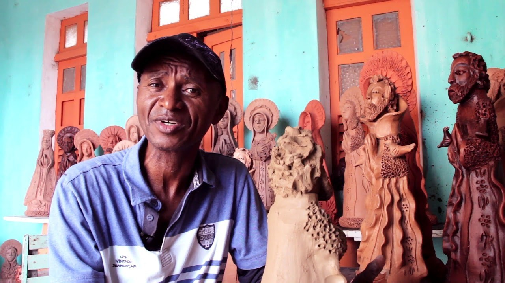
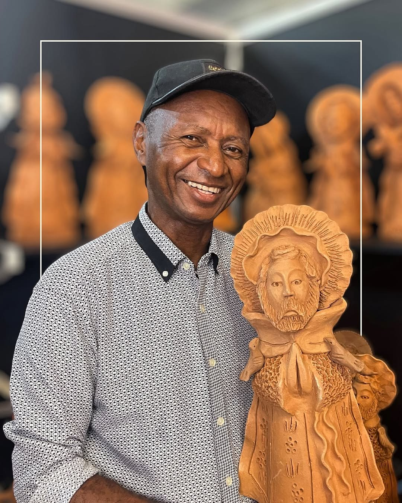
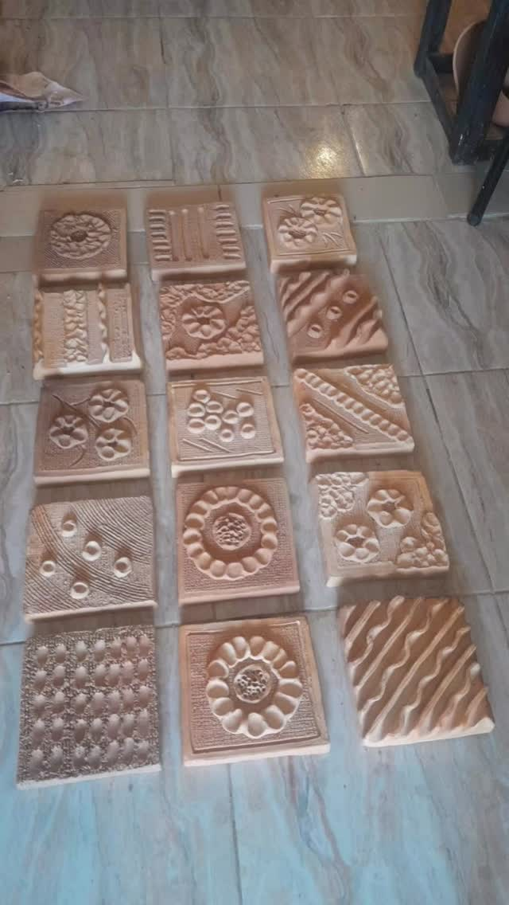
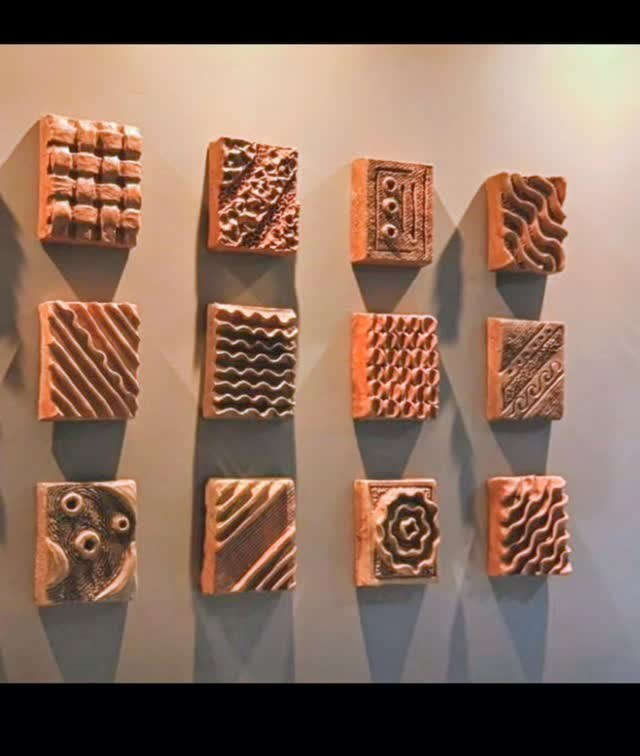
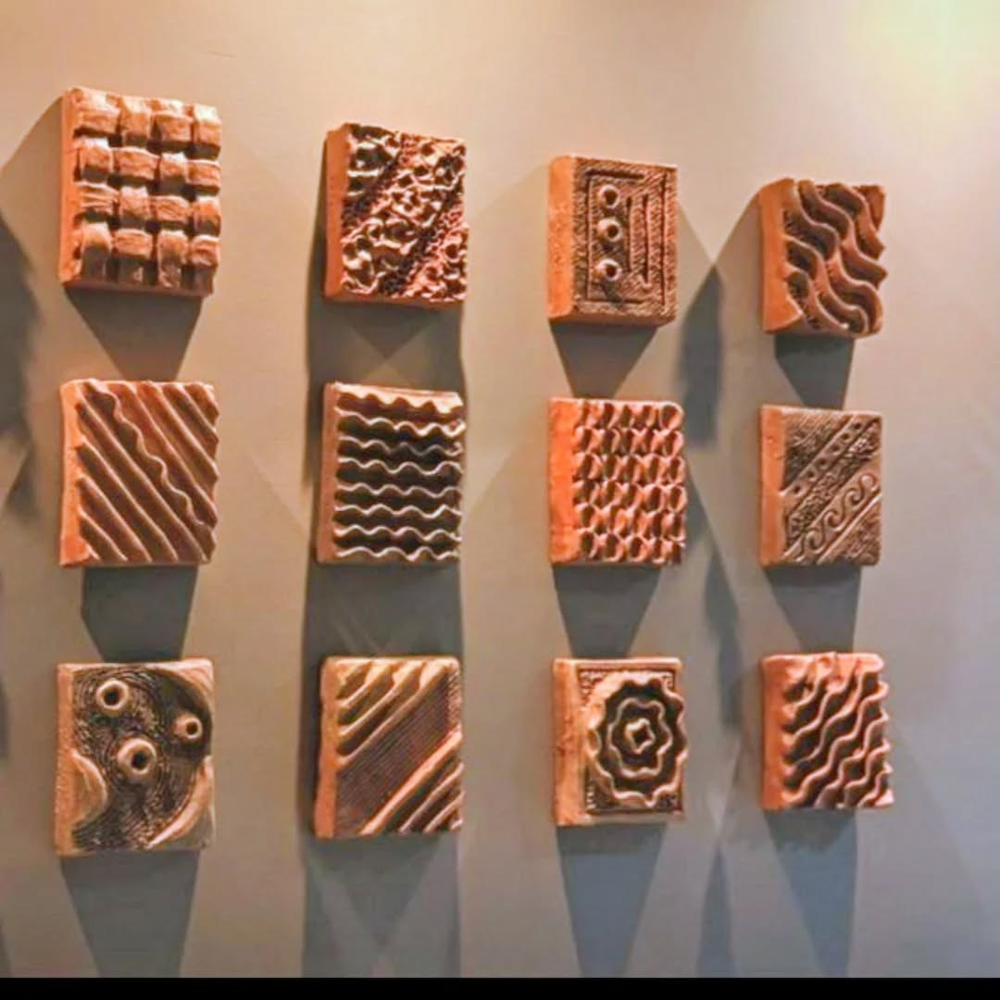

Mestre Zuza
Santos de barro com rosto nordestino e resplendor de festa popular.
Mestre Zuza é santeiro de Tracunhaém, reconhecido por esculturas de barro com santos de expressões vivas, roupas e resplendores inspirados na cultura da região.
Mestre Zuza é santeiro de Tracunhaém, na Mata Norte de Pernambuco, e um representante expressivo do barro pernambucano.
Zuza relata vir de família tradicional de artesãos e trabalhar com barro desde os 14 anos. Ao longo da trajetória, desenvolveu uma identidade própria: santos com expressões voltadas ao Nordeste e roupas que se afastam do imaginário de ouro e pompa.
O resplendor dos santos aparece ligado à cultura local: referências indígenas, negras e de manifestações como o maracatu rural. A escultura santeira torna-se, assim, um retrato devocional e regional ao mesmo tempo.
O santo de Zuza olha para o Nordeste — e o Nordeste olha de volta.
Para observar na peça
- Expressão dos rostos
- Roupas dos santos
- Resplendor ornamentado
- Referências à Zona da Mata e ao maracatu rural
Materiais e técnica
Galeria de referências de estilo
Imagens públicas reunidas para reconhecer linguagem, materiais e técnica. As peças da exposição são vistas apenas ao vivo.





Fontes e créditos
- Artesol — XVII Fenearte: as esculturas de barro de Mestre Zuza https://artesol.org.br/midiateca/xvii-fenearte-as-esculturas-de-barro-de-mestre-zuza/
- Diário de Pernambuco TV — Mestre Zuza https://www.youtube.com/watch?v=DQlqfSTFNW8
- Diretoria-Geral de Promoção da Economia Criativa — Mestre Zuza https://www.youtube.com/watch?v=p_VH2bvCKD0